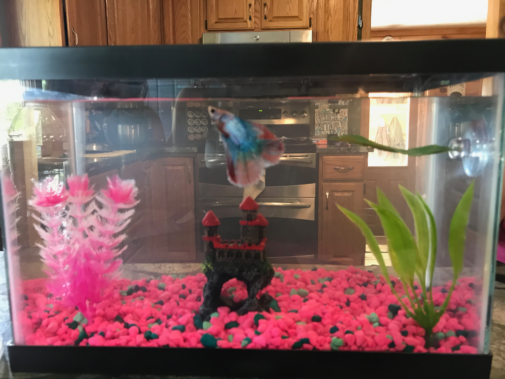
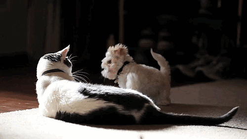

Home
Photo Gallery
My Family
My Pets
Contact Me
My Pets
GUNNER
Gunner is one playful pup! He loves to go duck hunting, antler finding, and swimming
with my dad. He can be naughty at times because he can't contain his love for food... or the
trash! His favorite snack is a puppy-pop. He loves play-dates with other labs.
MYSTERY
Mystery is one seriously cuddly cat! His hobbies include sunbathing, attempting to eat
my plants, attempting to eat my fish, eating treats, and being cute. All of your attention
must be on him 24/7! He loves to lounge in windows but is very scared of the outdoors.
LYONO
Lyono was my first cat that I saved up all of my money from selling my chicken eggs to
buy! Lyono is a huge outdoors guy. His hobbies include catching and eating snakes, moles,
and mice. Also, stealing dog treats out of the treat jar when no ones around. You can count
on finding him in a basket of laundry. Fun Fact: I taught him how to "sit" for a treat!
WILLY
Willy was my brother & I's first dog that my parents got us as a little puppy, it was
the most exciting thing for us! He is the most laidback and calm dog I've ever met to this
day. He's truly a man's best friend. He loves car rides and naps!
BLUSH

Bush is my pet beta fish. He's a "double-tail male". His beautiful pink and blue
colors are what gave him his name. And this is his humble abode! Blush loves to hangout in
his castle and take naps on his leaf hammock.
EXTRAS......
